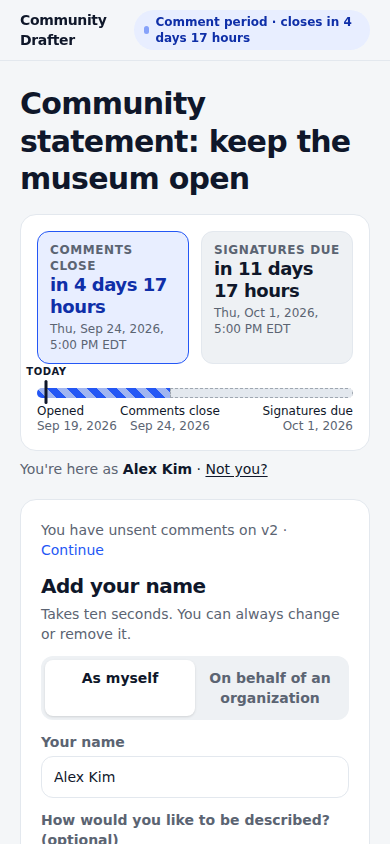
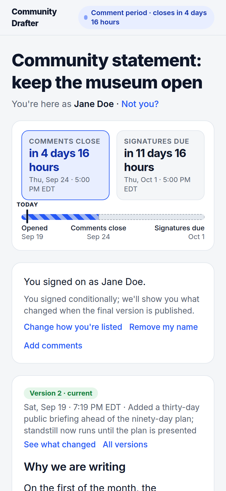
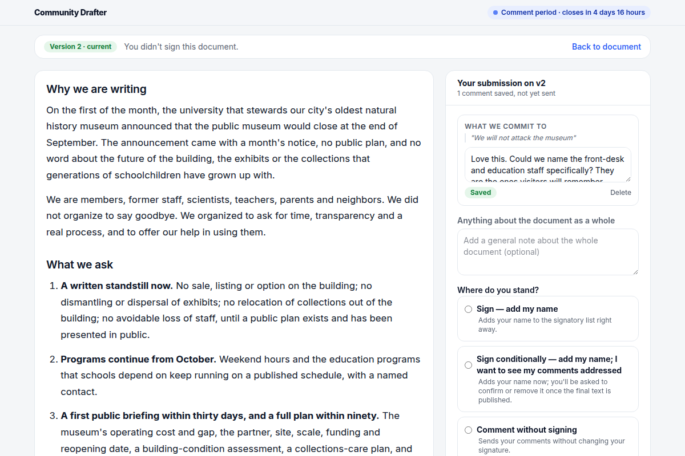
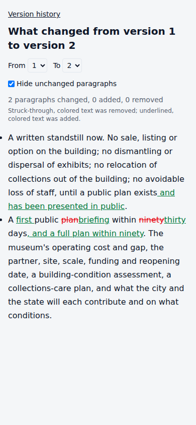
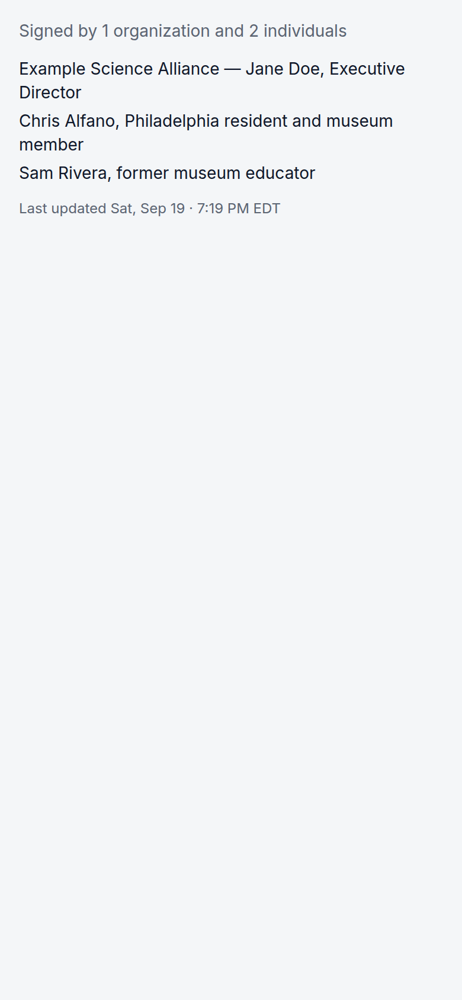

For the people who sign
No account, no login. A personal link, the document, and a button that says Sign as you. Sign now and remove your name any time until the deadline; you'll be told when the final text is published.
For the team that drafts
Publish versions with a one-line changelog. Read every comment as part of the submission it came in. Answer them in rounds, mark each one accepted, partly addressed, declined or noted, and publish again.
For the record
Every action is a commit in a private git repository: who signed, who removed their name, what changed and why. "How was this statement approved?" always has a real answer.
Getting in
Where you sign in
At your instance, not here. Go to <your-instance>/admin, type the email address your account was made with, and follow the link that arrives. No password. This site has nothing to sign into.
What the console shows you
Once you're in, /admin is a web console for reading a document: progress and deadlines, the people you invited and where each one stands, submissions and comments, versions, and "view as" to see exactly the page a given person was sent.
What the command line does
Everything that writes. Create a document, publish a version, open it on a clock, import invitees, send and remind, export the feedback bundle. It installs as an agent skill, so your team's agent can run a document the same way you would.
How to get an instance
If your group already runs one, ask whoever administers it to create your operator account, then sign in at their address. Otherwise the whole service is in the repository and one deployment serves any number of groups and documents.
There is no directory of instances and no shared sign-in: every deployment stands alone, and the only address that matters is the one your group uses.
How a document runs
A personal link, and a sign card first
Each invited person gets their own link, pre-bound to their identity from your contact list. The page opens on the clock, the person's name, and the sign card, prefilled. The document sits right below.
Signing works from the first minute of the comment period. The card says exactly what that means: you can remove your name until a stated date, and we'll email you when the final version lands.

Personal or official capacity
People sign as themselves, with a line about who they are, or on behalf of an organization, with their title and an attestation that they are authorized. The public list keeps the two apart and never blends in petition or mailing-list counts.
A conditional signature is a first-class choice: I'm signing, and I want to see my comments addressed. The team sees the flag; the public list does not.

Comments the way reviewers work
Select a passage and comment on it, or write about the document as a whole. Nothing you write is lost: your comments are kept as you go, and the tray shows what you've sent and what you haven't.
Submitting attaches a position: sign, sign conditionally, comment without signing, or decline. A submission is read as one unit, because people spread one thought across several comments.

Versions for people, not for programmers
The team revises and publishes v2, v3, each with a date and a one-line note about what changed. Anyone can read any version, and "see what changed" shows a redline between two of them: struck for removed, underlined for added.
Comments follow the text. When a passage moves, a comment moves with it; when a passage is gone, the comment is still shown with the words it pointed at.

A clock that is real, and a list that is exact
Comments close on the deadline shown, enforced by the server. Signing and removals continue until the second deadline. Publishing a final text during that window extends it, so nobody is caught by a change they didn't see.
When the window closes, the list is final: exactly the organizations and individuals named, and a count that means what it says.

Why it works this way
- Sign first, everything else after.
- If it isn't at least as fast to sign as a petition page, people defer, and deferred action is lost action.
- The clock is real.
- "Silence is consent" is only a fair claim when the deadline was what it said it was.
- Say exactly who signed.
- A coalition's credibility rests on answering "who is 'we'?" precisely.
- Nothing pending is lost; pending is labeled.
- We would rather read a half-finished thought than lose it, and we say which is which.
- The record is a git repo the team can read without the app.
- Versions, signatures and revocations are commits with structured trailers, readable with ordinary tools.
Running one
Two surfaces, one account. The web console at <your-instance>/admin is where you read a document — progress, people, submissions, versions, view-as. The admin skill is where you write: a command-line tool that installs into the repository your team, or your team's agent, already works from. Import invitees from your own contact list, publish, open, export the feedback bundle for a revision round, and publish again.
npx skills add JarvusInnovations/community-drafter --skill drafter-axi
drafter-axi docs create our-letter --title "…" --sender-name "…" --reply-to …
drafter-axi versions publish our-letter --file draft.md --summary "Initial draft"
drafter-axi docs open our-letter --comments-close 2026-10-01T21:00Z --signing-closes 2026-10-08T21:00Z
drafter-axi people import our-letter invitees.ndjson
drafter-axi people links our-letter --out links.csv
drafter-axi feedback export our-letter --format md
drafter-axi versions publish our-letter --file v2.md --summary "…" --dispositions d.jsonThe installed skill is not on your PATH: run it as scripts/drafter-axi … from the skill's own directory.
One instance serves any number of organizations and documents. There is no public homepage inside the product: a document is reachable only through the links made for it, plus an optional anyone-with-the-link read view and an embeddable signatory count for your own site.